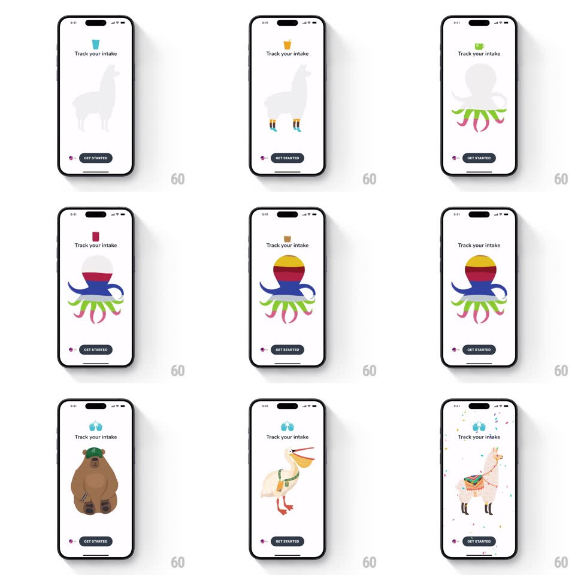

Media
Frame-by-frame

Rebuild this interaction 1:1: Waterllama's mascot onboarding - each animal silhouette fills with colorful liquid from the bottom up, then a swipeable carousel lets you pick your hydration buddy.

Rebuild this interaction 1:1: Waterllama's mascot onboarding - each animal silhouette fills with colorful liquid from the bottom up, then a swipeable carousel lets you pick your hydration buddy. ## Integration Integration: stack-agnostic spec - springs given as stiffness/damping, timed motions as duration + curve; map every value to your framework and animation library of choice. ## Scene A white onboarding screen: a small glass icon, "Track your intake" title, a large gray animal silhouette (llama, then octopus) that fills with liquid, and a black "GET STARTED" pill above a page dot indicator. Later frames show the picker carousel: a pink octopus, an orange tiger, a saddled llama, each with tiny drink icons above. ## Motion spec Pattern: silhouette liquid-fill showcase into a mascot carousel. - The fill: starting from the feet, colored liquid rises inside the gray silhouette (1.4s, ease-in-out) - the llama fills orange, the octopus fills in layers (red head, blue mantle, yellow-green tentacles per-region with 100ms staggers) - with a wavy surface line and two rising bubbles while it fills. - The liquid level settles with a soft slosh (surface tilt +-4deg, spring ~300/14, 600ms) on completion; the animal blinks once (eye scale, 120ms) to come alive. - Transition between showcase animals: current animal slides out left while the next slides in (shared-axis, 300ms, ease-out), its fill starting as it lands. - The picker carousel: horizontal swipe pages between mascots (paged scroll with spring snap ~380/24); the entering mascot scales from 0.92 with a fade, neighbors peek 12% at the edges; the drink icons above each mascot stagger in (60ms apart, translateY 8px + fade) on each page settle. - GET STARTED pill idles with a slow breath (scale 1 to 1.03, 2.4s) and presses with scale 0.95 (100ms). ## Calibration - The fill must respect the silhouette's interior mask exactly - no liquid bleeding past legs or tentacles. - Each animal has its own liquid palette; don't reuse colors across mascots. ## Reduced motion Fill rises without waves or bubbles; carousel snaps without scale. ## Don't miss - The fill starts at the FEET and rises - never a fade-in or a top-down wipe. - Page dots use the current mascot's liquid color for the active dot.